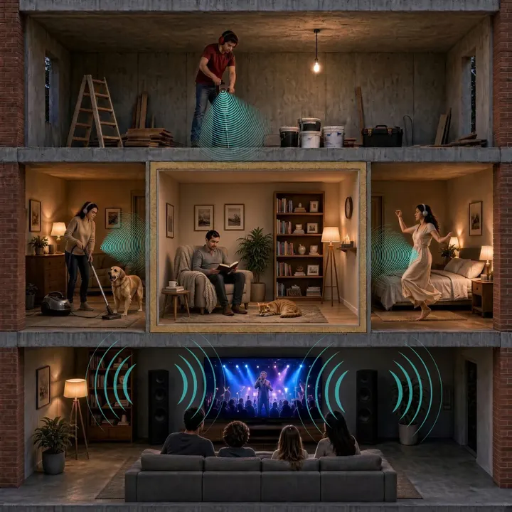
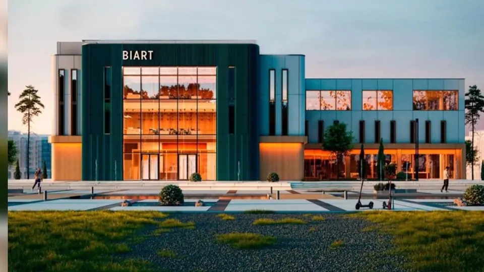
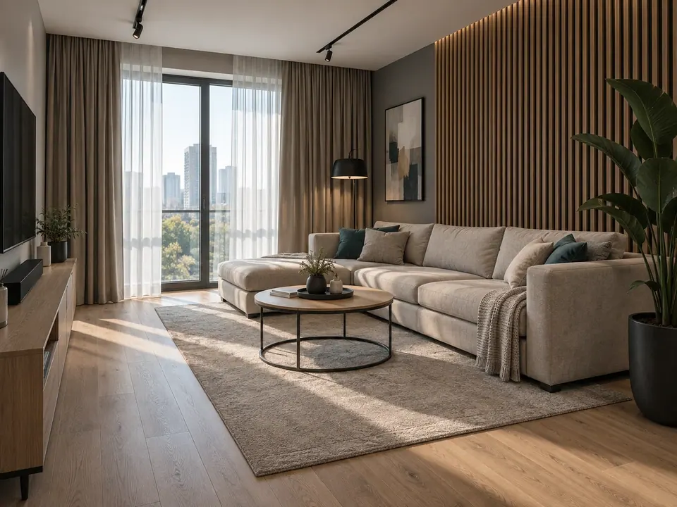

Звукоизоляция
Панель «Silence стена»
Панель для дополнительной звукоизоляции существующих стен.
40 мм25 кг
Сделано в Казахстане
Звукоизоляция от соседей и акустический комфорт внутри помещения. Определим задачу, подберём материалы и конструкцию.
Отдельные материалы · Готовые системы · Интерьерные панели

Картинка интерактивная: нажмите на комнату или выберите источник шума кнопками.
Другие задачи
Нажмите на комнату или на кнопку источника шума — здесь появятся описание и варианты решения.
Сначала задача — затем материал. Выберите звукоизоляцию или акустику помещения.
Все материалы ↗Звукоизоляция
Панель для дополнительной звукоизоляции существующих стен.
Звукоизоляция
Панель для звукоизоляционных конструкций потолка и стен.
Звукоизоляция
Плита для дополнительной звукоизоляции межэтажных перекрытий.
Звукоизоляция
Трёхслойный звукопоглощающий материал внутри звукоизоляционных конструкций.
Звукоизоляция
Композитный лист с демпфирующим слоем и основой под чистовую отделку.
Звукоизоляция
Нетканое иглопробивное полотно: дополнительный звукопоглощающий слой.

BIART, АстанаОбразовательный объект · Астана
Звукоизоляция музыкальных кабинетов. По информации SILENCE, в BIART применены решения компании.
Подробнее об объекте ↗Кинопавильон · Каскелен
Полная звуко- и шумоизоляция кинопавильона. Перегородка — 16 м.
Объекты и фотографии приведены в презентации SILENCE. Состав работ и результаты замеров в ней не указаны.
От жилой комнаты до общественного пространства — разные задачи требуют разных решений.

Визуализация направления
Стены, потолки и полы для типовых квартирных сценариев: разговоры, телевизор, шаги сверху, басы и домашний кинотеатр.
Понятная последовательность — без обещания «полной тишины» до обследования.
Откуда приходит шум, что уже сделано и какой результат нужен.
Основание, примыкания, доступное место и необходимость обследования.
Состав материалов, схема монтажа и расчёт под ваш объём.
Стоимость, сроки, монтаж и условия фиксируются до начала работ.
SILENCE
Материалы, готовые звукоизоляционные системы и интерьерные акустические панели. Для каждой задачи — свой состав и способ применения.
В журнале производителем указан ТОО «КазМирСтрой», Алматы.
Журнал — описание продукции, а не протокол испытаний. Документы для выбранной системы запрашивайте отдельно.
Статьи и советы
Разбираемся в причинах шума, устройстве конструкций и характеристиках.
Стук, щелчки и «катание шаров» по ночам: как наблюдать шум, отличить возможные источники и понять, когда нужна проверка труб или конструкций.
Читать статьюШум соседей и эхо внутри комнаты требуют разных решений. Как выбрать между звукоизоляционной конструкцией и декоративными акустическими панелями.
Читать статьюИтоговая изоляция, её прирост и снижение ударного шума — разные показатели. Какие вопросы задать о протоколе и почему числа дБ нельзя смешивать.
Читать статьюНет. Звукоизоляционные конструкции ограничивают передачу шума между помещениями. Интерьерные акустические панели применяются для работы с отражениями и эхом внутри комнаты.
Толщина панели — не толщина готовой системы. Дополнительно учитываются основание, каркас при его наличии, крепления и отделочные слои. Итоговый размер уточняется по выбранной схеме.
Такое обещание давать нельзя. Шум может передаваться через перекрытия, примыкания и другие конструкции. При басе, ударах и ремонте особенно важно сначала определить путь передачи.
Сообщите задачу специалисту. Для расчёта понадобятся размеры, состояние основания и выбранный состав системы. Точные цены и сроки согласуются индивидуально.
В карточке материала или системы откройте исходную страницу журнала. Протокол испытаний для конкретной конструкции нужно запросить у специалиста отдельно.
Обсудим вашу задачу
Укажите имя и телефон — подготовим сообщение для консультации в WhatsApp.
+7 776 17 888 17Проспект Бауыржан Момышулы, 15/2, Астана